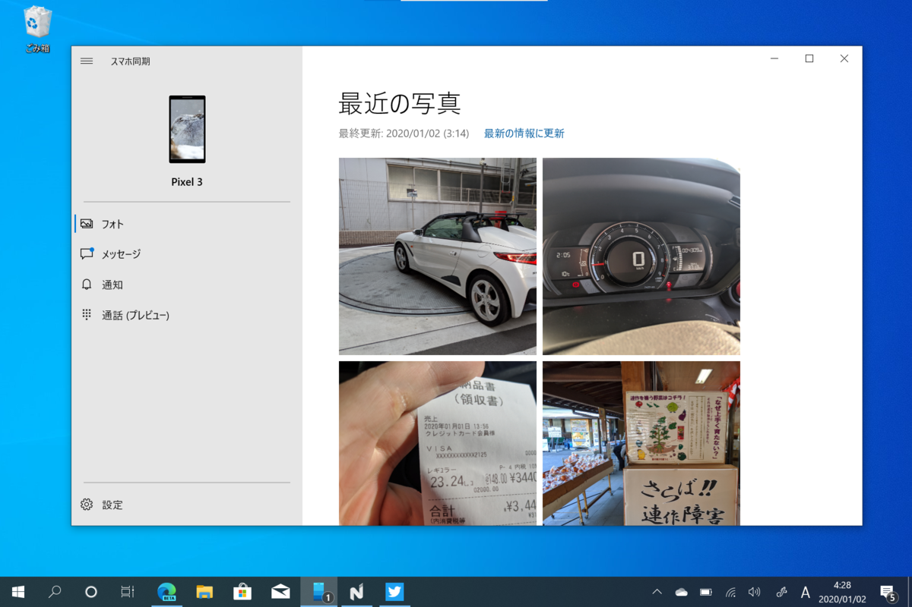
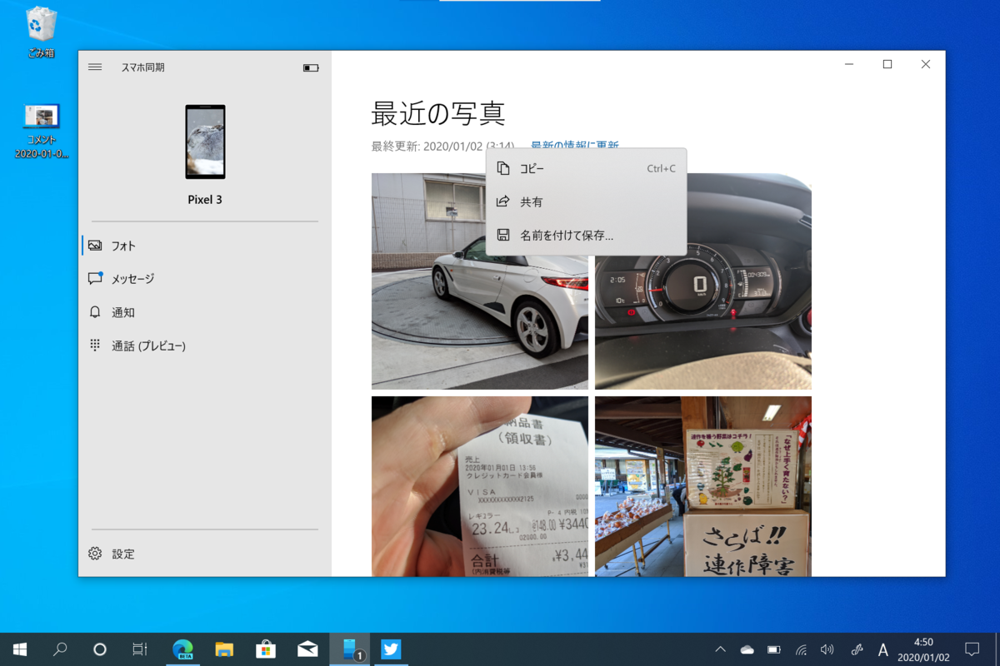
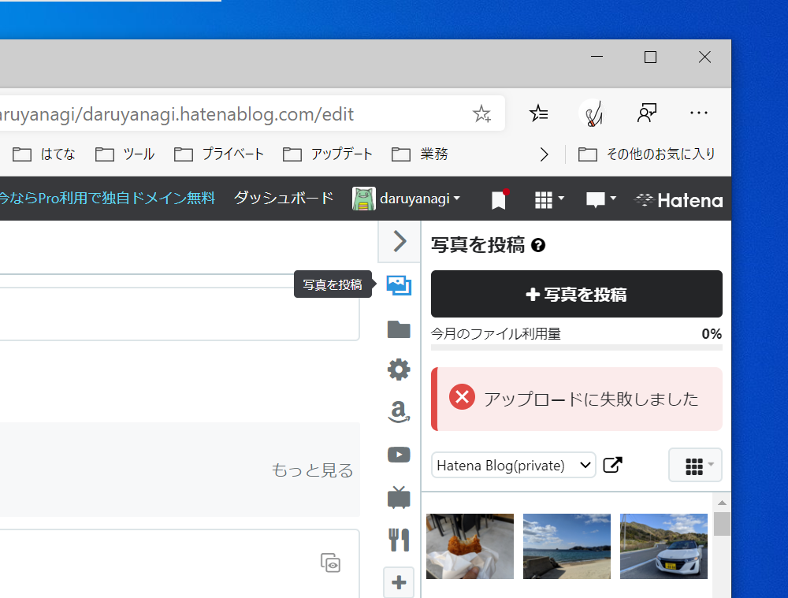

スマホで写真を撮る → 「スマホ同期」アプリでコピー → はてなブログに張り付け
公開日：
Window 10 の「スマホ同期」アプリのおかげで、スマホの写真を用いてブログを書くのがとても簡単に……ならない話。

「スマホ同期」アプリというのは、PC とスマホの間でデータを同期するアプリ……ではなく、どっちかっていうと、PC からスマホを「のぞき込める（リモートアクセスできる）」アプリだと思う。スマホをポケットやカバンのなかにいれたまま、そのデータ（写真）にアクセスしたり、SNS/MMS のやり取りや通話が行える。
最近、この「スマホ同期」アプリのフォト機能が強化されて、リモートアクセスできる写真の数が 25 → 2,000 に拡充された。
25 枚しか同期できないときはたいして魅力に感じなかったが、2,000 ともなるとなかなか便利だ。たとえば――

「スマホ同期」アプリでスマホの写真をコピーし、はてなブログに張り付ければ、そのまま写真がアップロードされる。［共有］コマンドで「切り取り＆スケッチ」アプリをはさみ、ペンで書き込みを入れて貼り付けるというのも簡単だ。

でも、ここで問題となるのが、はてなブログ側。アップロードできる画像のファイルサイズに制限があるので、単にコピーするだけではときどきアップロードに失敗してしまう。［共有］機能で他のアプリに送るにしても、「切り取り＆スケッチ」アプリにはリサイズ機能がない。「フォト」アプリに送れば（なんで「スマホ同期」アプリから直接共有できないんだ？）リサイズ機能があるが、こいつはファイルを保存する。まぁ、保存したファイルを Web ブラウザーにドラッグ＆ドロップすればいいんだけど、クリップボードで操作が完結しない（余計なマウス操作が必要になる）のは面倒だなー。
ってわけで、画像をリサイズするだけのプチアプリでも作るか、という気になっている。